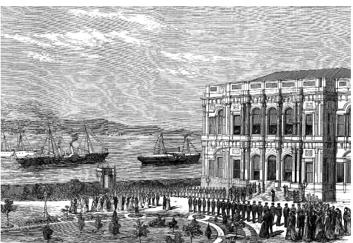
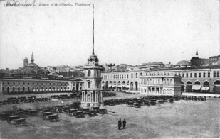
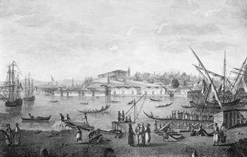

I
Batılılaşma Süreci ve Tepki
Değişme fikri, tavrı ve girişimi; tepkiyi ve tartışmayı da birlikte getirir. Bu üniversal bir olaydır. Her toplumda bu kaos kendine göre yaşanır, ama inanılmaz benzerlikler de vardır. Dolayısıyla Avrupalılık ve Avrupalılaşma 18. ve bilhassa 19. yüzyılda bu toplumların ortak problemi haline gelmektedir. Şüphesiz ki tarz-ı hayatımızın değişmesi, bilhassa yönetici sınıfların, yani toplumun seçkinlerinin uygarlık anlayışının, tavırlarının değişmesi, insanları rahatsız etmektedir. Burada çok ilginç direnişler vardır ve bu direniş biçimlerinin ne Müslümanlıkla ne Ortodoks Hıristiyanlıkla alâkası bulunur, onlar herkes için geçerlidir. Meselâ, Rusya’da Slavyanofillerden, yani Slav birliğini ve Rusya’nın kendi dini ve ananeleriyle bu birliğin başında olmasını savunan Panslavistlerden Konstantin Aksakov’un “Dönelim, Dönelim Şanlı Mazimize” diye bir şiiri vardır. Aksakov, Rusları Büyük Petro reformları öncesi Rusya’ya döndürmeyi amaçlamaktadır. Nedeni de Büyük Petro’dan sonra Rusya’nın kişiliğini, ahlâkını kaybettiği, ruhunu kaybettiği düşüncesidir.
Tabii batılılaşma başlayınca hemen her şey çok düzgün, güllük gülistanlık olmuyor. Toplumsal müesseseler yıkıldığı gibi, yerine getirilenler de hiç iç açıcı olmuyor. Toplum mühendisliği, inşaat mühendisliğine benzemez; istediğinizden çok, öngörmediğiniz sonuçlarla karşılaşırsınız. Herkes bilir ki 18.-19. yüzyılın Rusya’sı bir yandan Batı tipi ilmin, sanatların geliştiği, orduda birtakım reformların yapıldığı, öte taraftan çok fakir şehirlerin, son derece kötü bir ulaşım sisteminin ve her şeyden evvel de adaletsiz bir ziraî nizamın yaşadığı geniş bir ülkedir. Rusya’da köylülüğün yanında serflik, serfliğin yanında hiçbir iş yapmadan, bazen Knez Vorontzov’un olduğu gibi, sayıları 80.000’i, 100.000’i bulan toprak kölelerini tasarruf eden zadegânın bulunduğu, son derece geri bazen ortaçağı aratacak bir toplum vardır. Böyle bir toplumda o zamanki duruma, sorunlara deva arayan insanlar iki kategori oluşturmaktadırlar. Birinci zümre: “Az batılılaştık, Avrupa’yı taklit edemedik, oranın hukuk nizamını, adalet nizamını, anlayışını, malî anlayışını, iktisadî nizamını taklit edemiyoruz” derken; diğerleri de, “Efendim, böyle rezaletlere girdik, olacağı budur” demektedir. Bunların arasında Mihaylovski ve Aksakov gibi ciddi bilgili adamlar da göze çarpıyor. Tıpkı 19. yüzyılın Türkiye’si, hatta bugünün Türkiye’si gibi... Unutmayın ki bu kavgalar, bizden 100 sene evvel yola çıkmalarına rağmen Rusya’da da sürüyor. Aslında biz de değiştik; yani bugünün Türkiye’sini, 19. yüzyılın bir Türkü veya herhangi bir Doğulusu, mezarından kalkıp görse, şaşıracağına, kendisini kaybedeceğine, “Hayret, bizim Şark milletlerinden birinin dilini konuşuyorlar; ama kim bunlar?” diyeceğine hiç şüphe yok.

Sultan Abdülhamid’in Grandük Nikola’nın ziyaretini iade etmek üzere Beylerbeyi Sarayı’na gelişi,
Kaynak: The Illustrated London News, 13 Nisan 1878. (Ayşe Yetişkin Kubilay arşivi).
Türkiye çok değişti; ama buna rağmen hâlâ burada bile bu tartışma çıkıyor ve Rusya’da bile bugün belirli akımlar, Rusya’nın “batılılaşma” denen olaylarla bu girdaba düştüğüne, komünizm denen canavarın da bunun bir sonucu olduğuna ve memleketin bu hale geldiğine işaret ediyorlar; çünkü hepiniz biliyorsunuz, duyuyorsunuz, şu anda Ruslar hiç iç açıcı bir cemiyet değil! Birtakım insanların aç kaldığı, birtakım ihtiyarların evinden atılıp öldürüldüğü, öbür taraftan birtakım ahlâksızların nasıl para harcayacağını şaşırdıkları, adaletsiz yapısı olan bir toplum var Rusya’da. “Bu adaletsizliğin nedeni nedir?” dediğin zaman birtakım zümreler rahatlıkla; “Slav ruhunu, Hıristiyanlığın ruhunu, itidalini yani ılımlılığını kaybetmiş ahlâksız bir toplum” diyor. Onun için bu kavga hiçbir zaman bitecek gibi değildir.
Çok ilginç bir şekilde bütün Doğu Avrupa ve Ortadoğu’da Batılılara ortak bir isim takılır, “Frenk” yahut “Frank”. Hiçbir şey değişmez. Eski Rusya metinlerine bakın, Franklardan, yani Batılılardan söz eder. Bunların adı Rusçada “Alman” karşılığı “Nemze”dir. Toplumda batıcılar vardır, Batı karşıtları vardır. İran’a bakın, bu yeni batıcı gruba “felâketzede” der gibi, “garpzedegi” derler. “Garpzedegi”, yani garblılaşmanın felâketine uğramış şaşkınlar kalabalığının hali ve düşünmesi... Bu terim literatürde, sözde ve siyasette çok yaşayan bir kelimedir ve her zaman için de batılılaşma bizdeki bazı ezbercilerin tekrarladığı gibi: “Efendim Japonlara bakın, kimonosunu çıkarmıyor, kendi âdetleriyle yaşıyor; ama lokomotifi alıyor” üslubuyla yürümüyor. Hiç öyle değil. Hiç kimse lokomotifi yalnız başına almamıştır. Lokomotifi alıp da kimonosunu üzerinde tutmamıştır. O bir efsanedir.
19. ve 20. yüzyıllarda Japon dediğiniz, önce gözünü ameliyat ettirerek işe başlamıştır. Avrupalıya benzemek için kısık gözünü ameliyat ettirmek bugün kolay olabilir; ama 50-60 yıl evvel bunun tam bir çılgınlık olduğunu söylemeye lüzum yoktur. Bu ameliyatlar halen devam ediyor. İranlı hanımlar arasında da burun ameliyatı yaygın, bizde de sarışınlık... Sevseler de, sevmeseler de Japonlar Garb müziğini dinlemeye başlamışlardır. Japonlar halen operayı iyi yapamıyor; fakat öbürünü taklit etmeye çalışıyor, âdetlerini değiştirmeye uğraşıyorlar, kısmen etki-tepki dönemleri vardır. Meselâ, İkinci Harbi yürütenlere “faşist” diyorlar, böyledir ama, gelenekçi samuray zümresidir bunlar. İkinci Harbi yürüten Başbakan Hideki Tojo ve takımını kastediyoruz.
Garblılaşmayı benimseyen gruplar ve kişiler kadar benimsemeyenler ve karşı çıkanlarda da aynı hastalık arazları görülüyor. Tezatlar bizim tarihimizde de çarpıcı biçimde görülür. Bizim tarihimizin ilk mûkim elçilerinden Mustafa Sami Efendi vardır. Bunun kaleme aldığı bir de Avrupa Risalesi var. Efendi, Paris’te başkâtiplik, Viyana’da müsteşarlık ve en son Tahran’da sefirlik yapmıştır. Hep görevlerinden azledilip geri gelirdi. Devrin vakanüvisi Ahmed Lütfi Efendi, onun azlini kendi örf ve âdetlerimizi önüne gelene kötüleyip, Avrupa’yı cânı gönülden övmesine, bu mealdeki ölçüsüz sözlerine bağlar.13İşin garibi, bu ateşli Garb taraftarının elçiliklerdeki ikameti de dahil, ne burada ne de Avrupa’da hiçbir Garb dilini öğrenemeyişidir. Bu farazi Garb taraftarları ve farazi Garb düşmanları yanında, bulundukları Garb ülkelerini ateşli biçimde benimseyen veya dışlayanlar da vardır. Aynı şekilde Mustafa Fazıl Paşa’nın yanında harice kaçarak Yeni Osmanlılar dediğimiz muhalif siyasî grubu oluşturanlar ve sarıklı ihtilâlci Ali Suavi ise, medrese eğitimli olmasına rağmen Garb hukuku, Latin alfabesi, Avrupa tarz-ı hayatı ve kadın eşitliği konularında radikal garbcı görüşlere sahiptir. Hangisinin Batı dillerini daha iyi bildiğini bilmiyoruz. Batı ve Doğu dillerinin dördünü, beşini iyi ve pekiyi derecelerde bilen Şemseddin Sami, Ahmed Vefik Paşa, Maarif Nazırı Münif Paşa gibi zevat ise, ne Garb ne de Şark propagandasına girmeden çeviri yapmak ve ansiklopedi ve lûgat hazırlamakla ömürlerini geçirmişlerdir ve saltanata sadık kalmışlardır.
Garb dillerini ve dünyasını tanımadan radikal batıcılık yapan Doğulu okumuş tipini en acımasızca hicvedenlerden biri, ilerde imparatorluğumuzun Arap eyaletlerini parçalayan antlaşmaya adını verecek Mark Sykes’dır. Sykes, muhtemelen İttihatçılara mensup pozitivist ve ateşli batıcı bir kaymakamla konuştuktan sonra, “Yarım yamalak Fransız eğitiminin yıkıcı etkilerinden” söz ediyor. Sir Mark Sykes “hür basın, özgürlük” gibi kavramları bilmeden kullanan bu radikal memur için böyle diyor. Öbür taraftan aynı bölgede (Palu) zavallı Ermenileri ifsad eden, dış dünya hakkında yanlış bilgiler verip kışkırtan yabancılardan (misyonerlerden) şikâyet ediyor. Müteakib olaylar, bu olayları yaratanlar, katılanlar ve cereyan tarzına baktığımızda Sykes pek haksız da sayılmaz. Batı kültürü ve dünyası Doğu’da dar bir çevrenin dışında farklı bir görünümle illüzyon halinde yayılıyordu.14Batılılar, bazı Batı kurumlarını Doğulular için lüks olarak görüyordu. Nitekim Mark Sykes’a benzer bir tutum içinde olan ünlü hukukçu A. Batbie, Napolyon döneminin sansür mevzuatını (yayın öncesi sansür) Fransa için olumsuz; fakat bunu iktibas eden Rusya ve Osmanlı İmparatorluğu için uygun bulur.15
Öte yandan Batı tarzı hayatı refahla, Doğulu kültür ve günlük hayatı ise sefaletle aynîleştirip mukayese etmek moda olmuştu. Genelde iki cemiyetin hayatını ve kültürünü yakından tanımayan Osmanlılar, sefaletten nefret ettikleri ölçüde batıcı olmuşlardır. Zamanında çokça okunan bir risale Tüccarzade İbrahim Hilmi’nin Avrupalılaşmak başlıklı eseriydi. Yayın hayatımızın bu ünlü kişisi kendini yetiştiren bir aydındır. Avrupa’da bulunmamıştır, daha doğrusu ömrünün belirli bir safhasından sonra bazı yerlere geziler yapmıştır ve müşahedelerine göre, Garb-Şark ayrımı ve garblılaşma modelleri önermektedir. Dikkati çeken husus, gözlemlerinin yaygın, kabul gören veya bolca tekrarlanan gözlem ve öneriler olmasıdır. Bu gibi gözlem ve fikirleri başkaları da öne sürmüştür. İbrahim Hilmi’nin “Avrupalılaşmış aile” dediği, her şeyden önce İstanbul’un belirli semtlerinde ortaya çıkan zengin bürokrat veya tababet ve tüccarlık gibi serbest meslekle geçinen aile tipidir. Eski tip aile ise, şehrin büyük kesiminde yaşayan fakir İstanbul ailesidir. Fakir olduğu için imkânları kısıtlı, eğitimi kıt aile fertlerinden oluşmaktadır. Batılılaşan, zenginleşen ailenin, nasıl bir kültürel seyir izlediği zamanımız sosyolojisinin mevzuudur; ama herhalde İbrahim Hilmi’nin çizdiği portre ve kompozisyon ile bu gibi ailelerin büyük ölçüde bir alâkası yoktur.16
Garbı bilmeden sevenler olduğu gibi, hiç görmeden ve bilmeden nefret eden; Garblı birey ve aile için tasvirlerde bulunanlar da vardır. Her iki grubun ihsaslarında doğruluk payı olabilir; ama Doğulular, Batı hakkında kaleme aldıkları bazı seyahatnamelerden de anlaşıldığı üzere, bu dünyayı yüzeyden tanımışlardır.
Batılılaşma uzun karmaşık bir süreç. Temelleri uzun zamanda atılıyor. Batılılaşma kısa zamanda olup bitmiyor. Japonya için tekrarlanan şudur: 1854’te Commodore Perry gelmiş; gemiler topları limana tehditkâr biçimde çevirmişler, Japonlar da korkmuş, “Haydi batılılaşalım” deyip işe başlamışlar. Bu bir efsane. Japonya, 16. yüzyılda Batılıları sokmadı limanlarından içeri; çünkü ticarî kapasitesi, dengesi müsait değildi buna, ama ithal edilen fakir hamulenin içinde her zaman kitap vardı. Bu konuya ehliyetle değinen meslektaşımız Selçuk Esenbel’in çalışmalarına bakalım: Japonya’da 16. asırdan beri babadan oğula ırsî olarak geçen bir mütercimlik var, böyle bir dal, meslek var.17Bunlar kitap çeviriyor. Her kitabı çeviriyor. Botanik, kimya, tıp bilhassa. O tıp kitapları çevriliyor, ona göre kadavra da kesiliyor ve anatomi yapılıyor. Meselâ Rusya’da o sırada kadavra teşrihi yapılmıyor, Türkiye’de ise hiç yapılmıyor.
Çok meşhur olaydır bilirsiniz; Büyük Petro 17. asrın sonunda Hollanda’ya gittiğinde (bu, bir çarın, bir devlet reisinin normal gezisi değil, çok uzun bir ikametti) orada birtakım müesseseleri tetkik etti. Hatta Büyük Petro, kendisi gemi yapım çıraklığı öğrenmiş, çırak ve kalfa olmuş, berat almıştır. O sırada kadavra bugünkü gibi kesilmezdi; yani mikrop mefhumu henüz bugünkü gibi bilinmiyordu. Fenol kullanılmıyor ve cesedi açıkta teşrih ediyordu cerrahlar. Bilhassa Hollanda, tıp tarihinde Bologna’dan sonra anatominin en geliştiği bölgelerden biriydi. Ameliyatların da en fennîsini yaparlardı (o çağ için bu fen dediğin, afyonla veya fakirleri ucuz olsun diye düpedüz şarap içirip uyuşturarak ameliyat yapmaktı). Çar ve maiyyeti açıkta çalışan cerrahın yanından geçerken ceset kokuyor; çarın maiyyetindeki Rus soyluları, boyarlar, burunlarını tutuyorlar. Petro onlara bağırıyor; “O âlim ceset üzerinde çalışıyor, siz burnunuzu tutuyorsunuz, yaklaşıp öğrenmezseniz, cesedi dişlerinizle parçalattırırım size.” Meselâ, 18. yüzyılda Rusya’da başlayan kadavra üzerindeki anatomi çalışması Türkiye’ye 19. yüzyılda, Mekteb-i Tıbbiye sayesinde geldi. Japonya ise, bunu 16. asırdan beri yapıyor, tıpkı Hollandalılar gibi. Tıp ilminin adı Japonya’da “Hollanda bilimi”ydi. Onlar Kant’ı tanıyorlardı. Biz Kant’ı ne zaman tanıdık? 19. yüzyılda ve yanlış olarak tanıdık. Bütün kavramları yanlış çevirmişiz. Japon, Kant’ı ve diğerlerini zamanında tanıyor.
Demek bu batılılaşma akşamdan sabaha olacak bir şey değil; çünkü bir kere insanların tarz-ı hayatının, dünya görüşünün zedelenmesi söz konusu, direnme söz konusu ve o direnç dolayısıyla da değişmenin yavaş yavaş saparak oluşması söz konusu. Meselâ hukuk reformuna çok önceden 19. asırda başlamışız. Buna karşılık, Romanizasyon sürecini ancak 1926’da tamamlayabilmişiz. Türkiye’de hukukun Romanizasyonu tamam bir asırlık süreç. Bir toplum, ticaret hukukunu, iç ticaretini, denizcilik hukukunu, deniz ticaret hukukunu alabilir, hatta ceza hukukunu alabilir. Osmanlı Devleti Fransız ceza kanunlarını aldı; ama İslâm ceza hukuku olan “ukubat” ile Avrupa ceza prensipleri, ikisi bir arada yürüdü; bu bir düalizmdi. Cevdet Paşa, Avrupa (Fransız) Medenî Kanunu’nun kabulü gündeme gelince, bunu önlemek için İslâm hukukunun paralel mevzuatını Mecelle başlığıyla kodifiye etti, ama aile hukukuna hiç elini süremedi; çünkü hassas konudur. Japonya ise, Osmanlı’ya ve Rusya’ya göre bu konuda daha çabuk davrandı. 1894’te, hem de bizim gibi İsviçre Medenî Kanunu’nu değil; çok daha soyut, karmaşık, daha doğrusu iyi hukuk bilmeyi gerektiren bir ifadeye sahip olan Alman Medenî Kanunu’nu iktibas etmiştir. Biz 1926’da Alman Medenî Kanunu’nu tercüme ve adapte etseydik epey güçlük çekerdik. Bizim o zamanki camianın hukuk bilgileri buna müsait değildi.
1926’da bize Prof. Hirsch veya Prof. Schwarz gibilerinin gelmesi de söz konusu değildi. Henüz Almanya’daki Hitler felâketi ufukta görünmediği için biz o profesörlerin oradan kaçıp gelip bize hukuk öğreteceğini bilemezdik. Hukuk eğitimi denen dal bayağı zordur. Oysa Japonya bu eğitimi daha evvel becermiş, 19.yüzyılın sonunda bu Romanizasyon sürecini tamamlamıştır. Demek ki batılılaşma konusunda, “Biz ananemizi koruruz, ananemizi koruyarak tekniği alırız” gibi yorum ve projeler maalesef yürümüyor. Batılılaşmanın reçetesi o kadar basit değil; hayatın bütün kompartımanlarındaki değişmeyi birlikte yapmanız gerekiyor. Bunun için topluma nasıl bir yönlendirme ve hareket vereceksiniz, eğitimi nasıl ayarlayacaksınız, bütün bunlar sancılı sorunlardır. Bu sorunlar yumağı Türkiye’nin gündeminde, o günden bugüne hep var olduğu gibi, bundan sonra da var olacaktır.
Aslında bizim için var olan mesele Avrupa için yok mudur? Vardır. Yani İskandinavlarla Almanlar, onlarla birlikte Britanyalılar, derken İtalyanlar, İspanyollar bir araya gelecekler, bir tarz-ı hayatı yaşayacaklar. Bu nasıl mümkün olacak? Görünüşte bütün Avrupa laikleşmiş, kilise ile devleti ayırmış; ama “kilise ile devleti ayırdınız” diye Katoliklik, İspanya’nın ve İrlanda’nın hele Polonya’nın hatta İtalya’nın hayatından çıkmış mı tamamen? Bunlar nasıl olacak da Protestan tarzın ve kültürün içine girmiş İskandinavla, Almanla yaşayacaklar veya Macaristan için Katoliklik nedir? Fransa için nedir? Fransa için mevcut olan Katoliklik, Macarlar ve Polonyalılar için aynı şey değildir; çünkü Polonya ve Macaristan Katolisizmsiz düşünülemez. Demek ki benzer problemler dünün Avrupa’sında olduğu gibi, bizim zamanımızda da mevcuttur. Kuşkusuz Hıristiyan mezheblerin birbirine karşı konumu ile İslâm aynı şey değildir. Bu farklılıklar bir arada gerçekten güzellik mi, yoksa tatsızlık mı yaratacak?
“Batı Türkiye’yi dışlamıştır” sloganı çok telaffuz edilir. Batı Türkiye’yi kendi içinde görmüyor; biz de Avrupa’yı kendimizle birlikte görmüyoruz. Geçmiş asırlarda bunu çok açık bir şekilde söyleyip ifade ediyorduk; bugün daha kapalı bir şekilde ifade ediyoruz. Bugün bizim için hâlâ Batı Batı’dır, gerçi birtakım kurumları benimsemişiz; ama birtakım konuları ve zıtlıkları tartışmayı da tabu addediyoruz. Kısacası, bunlar artık tartışılmaz, bu yola girdik, “Avrupa ile birleşeceğiz” diyoruz. Bu, garip inatçı bir tutumdur. Türkiye şu sıralar bu konudaki ayrılıkları tartışmayı, abartmayı, vurgulamayı –Türkçe tabiriyle yarayı sancımayı– hoş görmemektedir. Yani itici bir tutum içindedir, bu bir deve kuşu politikası ve ilginç bir yaklaşımdır. Türkiye’nin batılılaşma tarihinde resmen 70 yıllık bir hazırlık devresi söz konusudur; fakat batılılaşma sorunu, batılılaşma olayı, hiç şüphe yok ki çok daha eskidir. Bu eski meselenin ortaya çıkışı önemlidir.
“Frenk” dediğimiz dünya, bizimle birlikte Doğulu Hıristiyanların da “Frank” dediği dünya, nasıl giriyor bizim içimize bunun üzerinde durmamız gerekmektedir. Evvelâ ordularıyla gelmek istedi, yani direnemediğiniz takdirde, ordularıyla ülkeyi istilâ edecekti. O takdirde, askerliğin ıslahı son derece önemli bir meseledir. Meselâ III. Ahmed devrinde yaşanan bir olay var: Barutu patlatıp gülleyi attıktan sonra top birdenbire çok kirleniyor. Barut artığı dolduruyor içini ve böyle birkaç atıştan sonra âdeta tıkanıyor namlu, onu temizlemeniz lâzım yoksa ters patlama olabilir. Bunu fırçalarla temizleyeceksiniz! Nasıl temizleyeceksiniz o tunç dökmenin üzerindeki barut artığını? Öyle her fırça temizleyemiyor; bir tek fırça var dayanabilen, domuz kılından fırça. Bu, büyük bir mesele oluyor. “İslâm Ordusu’nun toplarını domuz kılıyla mı temizleriz?” diye mesele çıkartıyor birtakım gruplar. Bu, yecuzu, layecuzu –caizdir, caiz değildir– münakaşasını kesmek için o sırada caizdir diye fetva çıkarmak isteyen adam: “Camilerin hangi fırçayla badanasını yapıyorsunuz?” diye soruyor. Onlar da domuz kılıymış. Burada mesele sadece domuz kılı değil, bir rahatsızlık var. Yani 15. yüzyılda zamanın büyük tophanelerinden birini meydana getiren, zamanın tersanelerinden birini kuran devletin, artık nizamını değiştirmesi söz konusu. Rahatsızlık yaratan domuz kılından çok, bu nizam değişikliği.
Cerrah yetiştireceksiniz, asker telef olmasın diye. Eskiden cerrah yok muydu, vardı; ama, o cerrah artık işe yaramıyor. Ordu için yeni tip cerrah yetiştireceksiniz; onu imtihan edeceksiniz, ona göre diploma vereceksiniz, bu işlem birtakım insanları gayrimemnun hale getiriyor. Yobazlar matbaaya karşıymış. Peki ama, yeterince okuyan olsa, kitaplar Venedik’te basılır gelir (Viyana ve Venedik’te o zaman Arap harfli matbaalar var ve Türkçe kitap basılıyor). Nitekim Ermeni Mehitaristleri Arapça İncil basıyorlar, Türkçe İncil basıyorlar eski harflerle, getirilip buraya dağıtılıyor. O gelir de başka kitap gelmez mi? Mesele o değil. Mesele, kitap okunmuyor zaten; el yazması yetiyor, bir eserden 50 kopya olsa –en yüksek talep de odur– oradan oraya dolaşıp bir kişi okuyup, 50 kişi dinliyor ve maksat hasıl oluyor. O toplumda her eve kütüphane kurup, kitap doldurmak diye bir hastalık yok bugünkü gibi. Yahudiler, Ermeniler matbaa kurmuş da bir şey mi olmuş; parlak bir netice mi hasıl olmuş? 200-300 senede birkaç dua kitabı ve edebî kitapla yetinmişler. Bastıkları kitabın kaç kalem ve kaç adet olduğuna bakmalı... Nitekim Rusya’ya matbaa 16. asırda girdi; ama ne basıldı? Asıl kitap basıp okuma 18. yüzyılın işidir. Demek ki kitaba karşı talep yoktu. Bu gerçekçi bir batılılaşma kıstası değildir.
Batı’nın hayatına girerken, insanların psikolojik direniş noktaları vardı. Bazı diyaloglar vardır ki kitaplara kadar geçmiştir. Hatta çok ilginç diyaloglar ecnebî dil kitaplarına kadar geçmiştir. Meselâ, 17. asırda Jacob Nagy Harsabany diye bir Macar geliyor ve Türkçe Öğretim El Kitabı yazıyor; Türkçe öğretmek için kaleme alınmış –Latince/Türkçe– ve Türkçenin Latin harfleriyle yazıldığı ilk kitaplardan biri bu... Meselâ şöyle başlıyor: Yanındaki, “Ört başınu, ayuptur” diyor.18 Burada kullanılan diyalogun Türkçesinin pek hoş ve bugünküne yakın olduğunu görüyoruz. Demek ki şapka çıkarıp-şapka giymekten başlayan bir kültür çatışması herkesin dikkatini çekmiş.
Buradaki terslikten başlayarak, veya “Siz böyle temizlenirsiniz, biz böyle abdest alırız”; “Sen bunu yersin, ben bunu yerim”den başlayarak Batı ile bir kültür çekişmesi var ve bu soğukluk, çok üniversal bir şeydir. Batı insanına bakış tarzı, Alman’a bakış tarzı, Rus edebiyatında nasılsa bizde de öyledir. Çok ilginç bir şeydir, 20. yüzyılın başına gelmiş olan Rusya, artık zannedersiniz ki batılılaşmıştır. Hayır! Hâlâ Batılılara karşı nefret duyuyorlar, şüphe duyuyorlar, uzaklık duyuyorlar. Meselâ, 20. yüzyıl başının ünlü Rus yazarı Kuprin’in Yama adlı tiyatro eseri bir genelevde geçer. Genelevin patronu bir Alman kadındır. Rusya’ya gelmiş yerleşmişlerden biridir. O kötü Alman aksanı ve bozuk Rusçasıyla genelev sakinlerine günlük direktifi verir: “Ben size disiplini öğretirim, Ruslar aptal ve tembel bir millettir, disiplin yoktur, size disiplini öğretmek lâzım, böyle çok iş çıkar.” der. Kuprin onun aksanıyla ilginç bir biçimde; Batılının Rusya’yı hâlâ Şarklı olarak gördüğünü belirtir; ama bir yandan da Batı’ya kinini kusar. Rusya hâlâ kendini Şarklı olarak görmektedir. Öyledir. Hâlâ iki dünya birbirine zıttır ve bu zıtlıklar bazen komediye, hicve varacak şekilde ifade edilmektedir.
Onun için Tanzimat edebiyatına baktığınız zaman, bilhassa Ahmed Midhat Efendi’de “Batılı böyledir, Şarklı böyledir, Beyoğlu böyledir, İstanbul tarafı böyledir” edebiyatını bütünüyle görürsünüz ve Felâtun Bey’le Rakım Efendi’nin kişiliğinde bu iki zıt tip çizilir. Birisi işini yapan, terbiyeli bir Osmanlı, dinine ve ananesine bağlı; öbürü zıpır, batılılaşma meraklısı, alay konusudur. Meselâ, Tanzimat devrinin meşhur bürokratlarından biri, “Mahşer Midillisi” denen Kâmil Bey, Fuad Paşa’nın kayınbiraderidir, “Altıncı Daire Belediye Reisi” olmuştur (Beyoğlu Belediye Başkanı). Onun Fransızcası ile çok alay edilir. “Les affaires sont devenues fourchette: İşler çatallaştı”, veya “Ol bâbda irade efendimindir; à cette porte irade à mon seigneur” gibi çevirileri alay konusudur. Bu Kâmil Bey, sahte, kötü batılılaşma örneği olarak gösterilen tiplerdendir. Demek ki 18. yüzyıldan 19. yüzyıla geçişte bile Batı karşısında bu tür ikirciklenmeler; bu tip dökülmeler vardır.
Türk’ün Gözünde Avrupalı
Bazı vesikalar üzerinde duralım: Kırım Savaşı, biliyorsunuz Osmanlı Devleti’nin Rusya karşısındaki ölüm kalım savaşlarından birisidir. Bu, Türk cemiyetinde Batı’ya karşı ister istemez bir yumuşama meydana getirmiştir. Birtakım tarih literatürümüzde umumî nokta şudur: Mustafa Reşid Paşa batıcıydı; fakat ondan daha beteri Fuad Paşa’ydı. Bunlar sefaret ajanıydı, Batılılara her şeyi verdiler. Tabii ki bunlar mesnetsiz değerlendirmeler. 1853’te savaşa giriyorsunuz Rusya ile ve o savaşta Batılılar sizi destekliyorlar. Gerçi çıkar için desteklediler; fakat şunu görüyor İstanbul ahalisi: Gencecik çocuklar gemilere biniyor, oraya sevk ediliyor, gelmiyor ya da sakat geliyor. Yani “o gâvur”, ilk defa bizim için ölen, bizim çocuklarımızla birlikte çarpışan, onlarla birlikte ölen, onlarla birlikte sakat kalıp dönen adam. Dolayısıyla Türk kamuoyunda “gâvur” diye bakılan ve “Frenk” denen bu insana karşı bir yumuşama meydana geldiği açıktır. Bu çok ilginç bir gelişme; çünkü ondan sonra yan yana yaşarken bazı tavizlerin verilmesi söz konusu oluyor. Bu taviz sadece devlet düzeyinde değil, âdeta kapalı bir kontrat sistemiyle, sosyolojik bir kontrat sistemiyle bütün kavim, bütün bir millet tarafından veriliyor.
Batılı bizi çok önceden beri incelemeye başlamış. Biz ise Batı’yı tanımıyoruz. Nadir istisna Evliya Çelebi’dir. Bu çok gerçektir, yani Evliya Çelebi’yi okuduğunuz zaman muhteşem sayfalar görürsünüz.19Bir kere her birinin lisanı konusunda örnekler veriyor. Örneklerle Bavyera lehçesini kaydediyor. Evliya Çelebi’nin kulağı o kadar iyi ki, bize bir sürü Kafkas dillerini, lehçelerini kaydetmiştir. Bugün bazı Kafkas lehçeleri kaybolmuş neredeyse. Filologlar dört elle sarılıyor yazdıklarına. Keşke Arap harfleriyle yazmasa; çünkü sesliler olmadığı için her zaman veremiyor fonetik karşılığını kaydettiği kelimelerin... Bavyera lehçesiyle cümleler yazmış. Evliya’da Batılıyı tanıma var. Batı devlet sisteminin tarifi var. Meselâ, çok ilginç bir şey, birlikte Viyana’ya gittiği Elçi Karamanlı Mehmed Paşa (Beylerbeyidir) şehre atla mı girilecek, arabayla mı girilecek tartışması yapıyor. Kayzer’in adamları, “Araba yollayacağız, ona bineceksiniz” diyorlar. Beylerbeyi diyor ki: “Bizde arabaya kadınlar biner, biz atla gelelim”; öbürleri, “atla sırf Kayzer geçer şehirlerden” diyorlar. Cevap: “Bizi alâkadar etmez”. Sonra sefaret heyetleri doyuruluyordu, biliyorsunuz. Bilhassa bizde İran ve Avusturya’dan gelen kalabalık elçilikleri beslemek, geçtikleri şehirler için bir yüktü. Tabii karşılığı da veriliyordu. Avusturyalı yetkililer: “İşte bu kadar yemek gelecek” deyince, “Yok bu yetmez” deniyor. Avusturyalılar, “O zaman bu miktarı vermek için merkezden izin alacağız” diyorlar. Paşa: “İki kap yemek için İmparatora mı soruyorsunuz? Ne nâkis bir şey, biz önce kaleyi fetheder, sonra padişahımıza haber veririz” diyor. Bu ilginç bir karşılaştırma.
Osmanlı belirli çağlarda Batı’yı merak ötesinde ciddiyetle incelemedi. Müslüman için Müslüman dünyasının dışındaki bölge dârü’l-harb’dir ve orada yaşayanlar harbîdir. Onlar içeride yaşayan gayrimüslimden de farklıdır, içerideki gayrimüslim zımmîdir. Belirli vergilerle, mükellefiyetleri karşılığında himaye edilir. Halbuki teorik olarak bir harbî öldürülmelidir, malı da yağmalanmalıdır. Bunun istisnası ancak “aman” (garanti izin) alarak gelen harbî için söz konusudur. Dikkat edin gelen ister sefir, ister hacı, ister tüccar olsun statü fark etmez.
Bu kuralın nasıl yumuşatılacağı söz konusudur; arada bir ahitname olacaktır, aman verilecektir dedik. Bu şartlar tahtında harbî bir memlekette bir Müslüman tüccarın bulunması veya elçinin bulunması da mümkündür; fakat yerleşip yaşaması söz konusu değildir. İslâmiyet bunun hukukî vechesini düzenlememiştir. Tam aksine Endülüslü hukukçulardan Vanşarisî’ye bakarsanız, “En iyi ve adil idare edilen bir harbî ülkede (kefere ülkesi; diyar-ı küfr de denir) yaşamaktansa, en zalim ve kötü idare edilen İslâm ülkesinde yaşamak evlâdır.”20 İlginç bir kural ve ictihad bu; çünkü iyi muamele gördüğü yerde azınlıklar erirler (asimile edilirler). İslâm Hukuku’nun, Endülüs’ün düşmesinden sonra va’zettiği kural, Müslümanın harbî ülkede yaşamamasıdır. “Göç edin” diyor ve Müslümanlar elden çıkan ülkeden daima göç eder. Ne zaman bu ülkelerde kalıp, yaşamaya başlamışlar? Çünkü Osmanlı devrinde artık kolonilerdeki Müslüman sayısı bağımsız hükümran İslâm ülkelerindekini neredeyse kat be kat geçmiş, 19. asırda dünyada 300 milyon Müslüman yaşıyorsa, İran ve Osmanlı İmparatorluğu’nda oturanlar bunun dörtte biri bile değil... Dolayısıyla 200 küsur milyon insan, Hindistan, Endonezya, Doğu Afrika, Rusya gibi harbî ülkelerde, kolonilerde yaşıyor. Ancak bu zamanda biz Batı’yı tanımaya, Batı üzerinde düşünmeye başlamışız ve bu tabii soğukkanlı bir düşünme olmamış. Son derece fevrî, hamasî dediğimiz bir siyasî söylemle ortaya çıkmış bir Batı dünyası tasviri söz konusu. Ama Türkiye, yani 19. yüzyılda Osmanlı İmparatorluğu –sadece Batı’yı değil– İran’ı da tanımamaktadır.
Batılılaşmada ikinci kategori ülkelerden Japonya ve Rusya’dan farkımız budur; çünkü onlar yaşadıkları veya karşı karşıya kaldıkları dünyayı bizden daha iyi inceleyip öğrenmek durumundaydılar ve bütün dünyayı çok iyi öğreniyorlardı. Bizde ise, bu hastalığın, bu ihmalin, bu nakîsenin, bugün de devam ettiğini söylemek mümkündür.
Batılılaşma Olayının Nedeni ve Nasıl Karşılandığı
Türk batılılaşması adı konmadan ve üzerinde tartışılmadan zarurî sebeplerden ötürü başlamıştır. Bu süreçle karşılaşınca ve içine girilince Batı (yani Avrupa’nın batısı) tartışılmaya başlamıştır. Bu olayın etrafında da ideolojik tutum alan gruplaşmalar ortaya çıkmıştır. Dolayısıyla Türkiye’de sağ ve sol, sermayenin, işgücünün ve bölüşüm kavgasının etrafında oluşmaktan çok bir kültürel seçimin, bir tarz-ı hayat seçiminin ve bunların mümâsili olan farklı dünya görüşlerinin adı olmuştur. Batılılaşma ise askerî bir imparatorlukta, askerî nedenlerle başlayan bir değişimdir ve karşı değişim hareketi de buna göre değerlendirilmelidir.
Hiç şüphe yok ki –okul kitaplarından da hatırlıyoruz– İkinci Viyana Kuşatması dediğimiz olay, bizim tarihimizde çok önemli görülmüştür, bu doğrudur. Birincisi, ilk defa toprak kaybıyla neticelenen en uzun harpti. Sonra, üzerinde durulmayan diğer bir husus, bizim ordularımız ricat etmeyi pek bilmezlerdi. Ricat, Machia-velli’de de vardır. Eski Roma ordusundan farkımız budur. Mac-
hiavelli, disiplinli ordu mefhumu üzerinde dururken, Roma ordularına işaret eder, ki doğrudur; çünkü Romalılar ricat etmeyi bilirlerdi. Burada parantez açarak konuşayım. Romalılar bir yerde savaşa gittiği zaman, meselâ, Barbarlar dedikleri o zamanki Germanya’daki, Galya’daki topluluklarla savaşa gidiyorlar; durum, konum ne kadar müsait olursa olsun, düşman güçlerine aniden saldırmazlar. Saldırmadan evvel, “castra” dedikleri ordugâhı kurarlar, etrafına hendekler kazarlar, ordugâhı tahta perde ile hemen çevirirler, etrafına kazılan hendekler ricat anında sığınmak içindir. Sırtını sağlam yere vermek içindir. Bunun çok örnekleri vardır. Meselâ, Galya’da Julius Caesar’a müşavirleri: “Saldırınız” dediler, “Hayır! Önce castra kurulsun” dedi; “Öncelikle ordugâhı inşa edeceksiniz.” Hakikaten görüldü ki Galyalıların saldırıda gizlenen art kuvvetleri varmış. Onlar Roma lejyonlarını imha edebilirlermiş. Bu tedbiri göstermeyen bir komutan, meselâ Quintius Varus, Kuzey Almanya’da Heruskler’in başbuğu Hermann’ın [Arminius] hücumuyla feci bir yenilgiye uğradı.
Bizim ordularımızın ise savaş gücü yüksekti, çarpışmayı bilirdi, bunları Machiavelli de belirliyor; ama ricat bilmezlerdi. Hakikaten hatırlayacaksınız, 15. yüzyılda Balkan geçitlerinde bizim Sırpsındığı Savaşı dediğimiz bir ricatımız vardır, ricat değil, bozgundur o. Ta ki II. Varna Savaşı’nda, II. Murad orduyu toparlayıp Hunyadi Yanoş komutasındaki Haçlıları yenene kadar etkileri süren bir bozgundur. İkincisi de, Viyana Muhasarası’dır. Bozgun oluyor; çünkü ricat etmeyi bilmiyor ordu. Bu eksiklik Balkan Savaşı’na kadar sürer. Ordu ricat etmeyi bilmez. İlk defa ricat etmeyi İstiklâl Savaşı’nda öğrenmiştir. Gazi Mustafa Kemal Paşa’nın harp tarihimizdeki büyük katkısı düzenli çekilmeyi öğretmesidir.
Ricat etmeyi bilmeyen ordu, İkinci Viyana Muhasarası sırasında Avusturya-Alman orduları karşısında üstün bir durumdayken çok büyük bir bozguna uğradı; elimizden koca koca eyaletler çıktı. Bunların bir kısmını sonradan alabildik; ama biliyorsunuz, Mukaddes Liga’nın karşısında yenildik ve Türk İmparatorluğu’nun eski imajı bitti ondan sonra. Bunun ardından bizim imzaladığımız antlaşmalar var: 1699 Karlovitz-Karlofça, 1718 Pasarovitz-Pasarofça gibi barışlar... Bunlar, Avusturya ve Rusya karşısındaki ricatın, 1699’da genellikle Avrupa Ligası karşısındaki ricatın sonuçlarıdır.
Şimdi bu iki antlaşmanın sonuçları üzerinde durmamız gerekir. O güne kadar yaptığımız antlaşmalar, milletler arası muahedeler, aslında muahede değil, ahitnamedir; yani tek taraflıdır, muahedede ise karşılıklı sözleşme, ahitleşme söz konusudur. Bu, İslâm’da görülmez, yani böyle bir mefhum söz konusu değildir bizim açımızdan, devletler hukuku açısından. Biz ahitnameler veririz, yani birisi ile anlaşsak bile âdeta tek taraflı bir atiyede bulunuruz veya tek taraflı bir söz veririz. Karşılıklı bir anlaşma, muahede müessesesi işte bu antlaşma ile başlar. Bu 1699’un ruhu için de söz konusudur. Bu antlaşma ile Osmanlı İmparatorluğu Hıristiyan devletlerle, gayrimüslim devletlerle beynelmilel hukuk normları içinde antlaşma yapıyor ve yeni bir dünyaya adım atıyor. Bu, bizim için olduğu gibi, onlar için de böyledir. Artık burada tarafların haklarını bilirken, müeyyideleri, yaptırımları tarif eden, ona uyumu tarif eden, doğrudan doğruya ne Hıristiyan’ın, ne Müslüman’ın hukuku; fakat Hugo Grotius’un başını çektiği milletlerarası yeni laik hukuk, Romanist hukuk söz konusudur: de iure Belli ac Pacis’in yazarı Hugo Grotius’un ve bütün o dönemin yetiştirdiği laik zihniyetli Roma hukukçularının geliştirdiği hukuk anlayışı içinde ortaya çıkan devletler hukukunun prensipleri söz konusudur. Bu neye istinat ediyor? Bu hepinizin bildiği gibi, 1648 Westphalia Barışı’na dayanmaktadır. Hepinizin malûmudur ki Westphalia Barışı uzun süren Otuz Yıl Savaşları sonunda imzalanmıştır.
Almanya, Avusturya ve Bohemya’da o zaman Protestanlar ve Katolikler arasında müthiş bir savaş yaşanmıştır. Bu korkunç savaşta, ordulara sivil halktan taraftar yoktur. Şehirlere hangi taraf gelse milletin ödü kopar. Yani Katolikler dahi Katolik ordulardan çekinir; çünkü gelirler, şehri yağmalarlar, ne mal kalır, ne ırz kalır, ne can kalır ortada. Protestanlar da herkesin çekindiği ordular. Bir tek, harbin ikinci ve son safhasında İsveç orduları kendi düzeniyle hepsinin üstünde bir yer edinmiştir.
Harpte bütün Avrupa karışmıştır; safhaları çok karışık bir harptir. Otuz Yıl Savaşları’nın her safhasını ezbere bilen tarihçi var mı, sanmıyorum. Kim nerede, ne için savaşmış, belli değildir. Düşünün ki Fransa ve İsveç bile karışmıştır bu savaşlara ve bunun sonucunda 1648’de beynelmilel bir barış, Westphalia Barışı imzalanmıştır. Buna göre bazı prensipler ortaya konmuştur; bu sadece iki tarafın barışı değildir, aynı zamanda diplomatik kuralların tespitidir. Yani bir memleket nasıl diplomat yollayacak, nasıl diplomat kabul edecek, elçilerin muafiyeti ne olacak, bu konular dahi ilk defa burada açıklığa kavuşturulup tespit edilmiştir. Bundan sonraki safha 1815 Viyana Kongresi’dir. Orada da yine diplomatik temsilin, diplomatik muafiyetlerin ana hatları ve teferruatı tespit edilmiştir. Bugün diplomatik sistem ona istinaden yaşıyor ve birbirimizi temsil ediyoruz. Sonraki bazı gelişmeler de vardır; ama temel iki tespit bunlardır.
İlk defadır ki 1699 Karlofça Muahedesi’nde Osmanlı İmparatorluğu bir antlaşmanın, Westphalia’nın getirdiği beynelmilel diplomasi ve temsilin esaslarını kabul etmiş oldu. Bu çok önemli. Biz bu arada dışarı devamlı büyükelçi yolladık mı? Hayır, bunun için bir asır daha bekleyeceğiz. Bizim o devirlerde ikamet elçisi yolladığımız vâki değil.
Ama ikamet elçisi göndermesek de, artık gelen elçilere ona göre muamele ediyorduk. Bundan böyle klasik Osmanlı devrindeki elçi kabulü ve protokolü sona eriyor, hemen sona ermiyor tabii; ama süreç başlamış. Elçiye bir ölçüde diplomatik muafiyet tanıyorsun, birtakım vergilerden muaf tutuyorsun. Yedikule’ye elçi kapatmak daha bir süre devam etti. Bunu biz yapardık, bizden evvel Bizans İmparatorluğu yapardı. Bu iki imparatorluğun elçiye ve gelene eşitlik esası üzerinde saygı duyma yükümlülüğü hiçbir şekilde yoktu. Şimdi o yükümlülük başlıyor. Bu çok önemli bir şey. Gerçi bundan sonra da böyle bir vak’a olmuştur. 1711 Prut Savaşı sırasında Rusya’nın bizdeki ilk mukîm elçisi Pyotr Tolstoy’u, yani büyük yazar Tolstoy’un dedesini hapsettik; ama değişme ve zorunlu bir uyum başlamıştı. Bilhassa Pasarofça Antlaşması ile (1718) büyük ölçüde Westphalia diplomatik ilişkiler sistemi içine girdik.
Burada dikkatinizi çekecek bir olay var. Osmanlı İmparatorluğu bundan böyle belirgin ölçüde hem tüccarların, hem misyonerlerin, hem diplomatların yerleşmesine ve yaşamasına açılmaktadır. Bu bizim tarihimizdeki en ilginç olaylardan birisidir. Diplomatlar geliyorlar, sadece başkentte değil, konsolosluklar vasıtasıyla her yerde faaliyet gösteriyorlar. Bunların en mühim özelliği, geniş bir tercüman kadrosu bulundurmalarıdır; bu tercümanlar genellikle yerli Rumlardan, Ermenilerden ve Yahudilerden himaye edilen bir sınıf oluyor. Yoksa herkesin tercümanlık yaptığı yok. Nihayet bir konsolos yılda kaç tane evrak çevirtecek? Bir kişi yapar onu; ama bakıyorsun konsolosun 19 kişilik tercüman kadrosu var. Demek ki konsolos yerlilerden 10 imtiyazlı adam yaratmış. Bazı tür vergiden muaf tutulan, her yere girip çıkan bir grup. Bunların içinden yükselenler var, gerçek dragoman olan meselâ, bir Ermeni Mouradgea D’Ohhson var, (Murat Tosunyan) sonradan D’Ohhson ismini alarak İsveç’in Türkiye’deki elçisi bile oldu ve ünlü bir Osmanlı tarihi yazdı.21 Çok önemli bir tarihtir bu. Bunun içindeki doğrular bugüne kadar kaldığı gibi, yanlışlar da kalmıştır. Meselâ, o kitapta ileri sürülen yanlışlardan biri, Osmanlıların hilâfeti Mısır’ın fethinden sonra, “Emanet-i Mukaddese ile birlikte aldıkları” efsanesidir. Bu uydurulmuştur. D’Ohhson’un kendi uydurması değildir; beynelmilel durum icabı bu miti uydurup onun kafasına sokanlar, bizim Osmanlı bürokrasisidir; çünkü öyle icab ediyordu. Biliyorsunuz, Kaynarca Antlaşması sıralarıydı. Bütün dünyada papalığın muadili bir halife yaratmak, bizim devletin işine geliyordu. Böyle bir Avrupalı inancı vardı, onu beslemek yolunu seçtiler; çünkü Kafkasya’nın belirli kısımlarını, Kırım Hanlığı’nın belirli kısımlarını kaybetmiştik; buralar Rusya’nın eline geçmişti. Oradaki Müslümanlar üzerinde ruhânî otorite ile bir nevi protektorayı devam ettirebilmek için bu çareyi bulmuşlardı. Bu parantezi açarak şunu söylemek istiyoruz: İster istemez yeni bir dünyada, yeni bir sistemin parçası olarak yaşamak durumundasınız. Eskisi gibi “Göğün İmparatorluğu” değilsiniz.
18. yüzyıl Avrupa tarihinde sıçrama asrıdır. Modern ve merkezî ordular kurulmuş, bunların karşısında devamlı yenilenmek zorundayız. Avusturya’da Prens Eugen’in (Von Savoyen) yönettiği ordular; Rusya’nın bu zamanda en iyi generalleri var. Bunlardan biri Suvorov; Tuna mansabında Ruslarla muharebe ettiğimiz yerlerde İsmail Kalesi’ni kaybettik. Kafkasya’da gerilemeler var. Oralardaki hâmi, protektor olduğumuz kabileleri, halkları koruyamıyoruz; bölge yavaş yavaş elden çıkmaya başlıyor. Avusturya karşısında yenilgilerimiz oluyor. Osmanlı orduları büyük bir şecaatle savaşa devam ediyor, zaman zaman Şehit Ali Paşa gibi hakikaten büyük komutanlar ortaya çıkıyor; fakat ordunun komuta heyetinin teknik bakımdan, donanım bakımından, talim bakımından ve asıl önemlisi talim, teknik bilgileri bakımından asrın gerisinde kaldığı artık ayan beyan görülüyor.
Asker bir toplum olduğumuz ve tarihteki rolümüzün askerlikteki başarılarda yattığı bir gerçektir ve tarihî toplumsal bir özelliktir. Bazı insanların karakter özelliği gibi, toplumların da kendilerine göre hassaları vardır. Bu toplumun tarihî oluşumu ve toplumsal özelliklerinden biri de budur. Onu kabul ederseniz, toplum bilimci olarak da idareci olarak da daha rahat edersiniz. Demilitarizasyon gibi eğilimler içtimaî gelişimin kaçınılmaz nirengi noktaları değildir. Türk halkının ve Türk aydınının kafasına, maalesef eğitimimizin sakatlığından dolayı dikotomiler sokulmuştur (dikotominin tercümesi, kutuplaşma, bir uçtan diğer uca gelişmelerdir). Bazı değişmeler kaçınılmaz gelişme gibi algılanıyor ki yanlış! Her şeyde ve her yerde değişme belirli model ve çizgi üzerinde olmaz. Gerekli de değildir. Mühim olan özgün gelişmelerimizi kavrayıp kabullenip ona göre yaşam çizgimizi tespit etmektir.
Mühendislik kafası ile toplum mühendisliği yapamazsınız, son derece tehlikeli bir eğilimdir. Maalesef bizim gibi, okuma yazmanın kıt olduğu ve gelişme sancısı çeken ülkelerde, insanların kafasına böyle toplum mühendisliği fikirleri sokulur ve gelişme modelleri; yani aydınlanmadan kaynaklanan gelişme modelleri çizilir. Şu safha ve kipte şu biçim bir toplum olarak buna doğru gelişiyorsunuz. Üç kuşak aileden çekirdek aileye gelişiyorsunuz meselâ (kısmen doğru, kısmen boş bir gözlem). Bundan başka meselâ, ilkokullarda bize; Yunan’ın, orta zaman İslâm dünyasının yahut Rönesans’ın adamı bizden eksik, geri, bilgisiz diye öğretilir. Boş bir lâf. Evet, belki eski Yunan filozofu çağdaş dünyanın lise talebeleri gibi cebir bilmiyordu (cebir daha kullanılmıyordu, biliyorsunuz Müslüman Arapların devrinde ortaya çıkmıştır); ama bu EskiYunan’ın, orta zaman İslâm dünyasının yahut Rönesans’ın adamı bizden bilgisiz demek değildir. Bilgilerini üniteye ve tartıya vursan, ortaçağda Farabî, sonra Leonardo da Vinci geniş bilgisiyle Rönesans adamı sayılıyor, hem ressam, hem mimar, hem heykeltıraş, hem müzisyen, bunların hiçbiri olmasa müzik eserleri çalınır, bundan başka mühendistir. Uçaklardan, helikopterlerden bahsetmiş, müthiş askerî köprüler, kanallar, gemi modelleri önermiş ve yapmış, hatta bize de davet edilmesi söz konusu olmuştur. İşte böyle manasız gelişme modellerine kapılan Türk münevveri, zannediyor ki bu noktadan şu noktaya gelişme kaçınılmaz ve gerekli bir şey; buradan buraya gitmeniz kaçınılmaz bir şey. İnsanlık değişiyor, değişme kaçınılmaz da olabilir; ama her değişme ilerleme değildir.
Toplumların muhakkak özellik değiştiren ilerlemeleri ve bu özellikleri de belirgin doğrultularda değiştiren karakteri yoktur. Bir toplumun tarihi içindeki macerası, yani İngilizlerin venture dedikleri, serencamı (güzel bir Osmanlıca kelimedir bu) böyle bir kimyevî reaksiyona, meselâ, sodyumla klorun reaksiyona girip tuz yapmasına, onun gibi bir gelişmeye veya demiri açıkta bıraktığınızda okside olup paslanması gibi olaylara benzetilemez. Onun için kafamızdan bu tip sakat, pozitivist gelişme modellerini çıkarmamız lâzımdır.
Şimdi, bu toplum demek ki temelde askerî bir toplum. Tarihî yönden de askerî bir örgütlenmesi var. Dağdaki göçebesinde bu özellik var. Şunu da ilave edelim. Göçebeler de birbirine benzemez zaten. Bizde bir umumî teşhis deyimi, daha doğrusu bir slogan vardır; “Göçebeyiz” denir. Sular niye akmıyor, borular niye patladı? Efendim “Göçebeyiz” deniyor. 1000 senedir şehirde-köyde oturuyoruz; göçebe mi kaldı? Sonra göçebelikle her şeyi izah edemezsin; çünkü göçebelikten göçebeliğe fark vardır. Deve güden göçebeler vardır, Arab-(urban), son derece de dinamiktir, bildiğiniz kent Arabına benzemez. Meselâ, Trablusgarb’da gördüğünüz Araptan sonra biraz uzakta Gadames vahasına gidin (vaha şehri), nerede bu Arapla öbür Arapların benzerliği dersiniz. İkinci grup son derece ölçülü, vakur, kompleksi yok. Özgün, kültürel ürünleri var. Geleneksel tiyatroları var. Pandomimler yapıyorlar o çöl Arapları; çünkü çölde yaşıyor, onun getirdiği bir dinamizm, onun getirdiği bir ölçü var, o tavırlarına kadar siniyor. Çölde yaşamak, denizde yaşamak gibi bir şey, yani denizcinin zihniyet ve tutumu gibi o dahi ölçülü, cesur, yaşayışını ve tavırlarını ayarlamasını bilir ve çölden de ayrılamaz insanlar; mutlaka oraya dönmek isterlermiş. Türk de meselâ atçıdır. At göçebesi başka türlü bir yaratıktır. Göçebe vardır, keçi ve koyunla geçinir, o başka bir türlü göçebedir. Zavallı, fakir ve sınırlı iktidar sahibidir. Bir de bir göçebe vardır, işte bildiğimiz Çingeneler. Tarih boyunca tamamen izole yaşarlar, hiçbir şekilde yerleşmezler –bazı göçebeler zaten yerleşmek istemezler– yerleştikleri an perişan olur giderler. Bugün yerleşecekleri yer zaten şehirlerin malûm, döküntü mıntıkalarıdır ve sefil hayat yaşamak zorunda kalırlar.
Bir toplumun mazisinde nasıl bir göçebelik örgütlenmesine sahip olduğu keyfiyeti kendi halini anlamak bakımından da mühimdir. Maalesef Türk toplumu göçebelik mazisini, askerî örgütlenmesini, dinî itikat ve âdetlerini, aile, boy, akrabalık ilişkilerini bilmiyor. Atçı göçebeler askerî örgütlenmelerinin karmaşık ve dinamik yapısı itibariyle yeni coğrafyaya intibak edebiliyor ve örgütsel biçimlenmeleri sayesinde fazla yıkıma maruz kalmadan dış etkenlerle bağdaşabiliyorlar. Nitekim Türk toplumunun; fakat hassaten devlet örgütünün Anadolu ve Balkan coğrafyasına intibakı, Avrupa’nın savaş tekniklerini aniden alıp uygulaması ve hatta bizzat son altı asırlık tarihimizin bir değişme, ıslahat ve giderek inkılâp tarihine dönüşmesinde bu özellik aranmalıdır. Türkler Orta Avrupa ve Balkanlar’da, Macaristan Krallığı’nın silâhlarıyla ve savaş düzeniyle karşılaşmış (küçük toplara dayanan tabur nizamı), 15. asırda bunu uyarlamışlardır. Büyük toplar için askerî mühendislik ve tophane gerekiyordu, kurulmuştur. 18. yüzyılda iş değişiyor. Yeni toplar için istihkâmlar yapılacak, buna göre yollar olacak.
Bu orduda yaralanan asker telef edilemez, yaralanma vak’aları ölümden çok. Askeri tekrardan muharebeye kazanmak için askerî cerrahlık gelişti. At var, atlar için baytarlık gelişecek, bunlar şart olan meslekler. Nitekim, dikkat ederseniz daha 18. yüzyılda kurmaya başladığımız ilk iki okul, Kara ve Deniz Mühendishaneleridir; çünkü Tophane ve Tersane zaten Osmanlı İmparatorluğu’nda vardı. Burada bir zihniyet değişikliğinden de söz etmek gerekir. Daha doğrusu zihniyet değişikliğinden değil, zihniyet ve davranışta birlikte bir değişim var; bu, Türklere özgü bir zihniyet ve davranış. Her toplum için böyle bir fark söz konusudur. Mekteplerde, “Bu Türk milletinin üçte biri şair, üçte biri memur, üçte biri asker bir millettir” diye öğretilirdi. Ecdadımız ticaretten, sanayiden anlamaz, bunları hep gayrimüslimlere bırakmışlar, yan gelip yatmışlar, diye söylenir, böyle öğretilirdi. Yanlıştır! Şunun için yanlıştır; çünkü Türk insanının ticaret ve sanayiden anlamadığı çok yanlıştır. Tam aksine müthiş sanayi tutkunu bir millettir, başka tabir bulamadım buna, industriamani’si olan bir millettir Türkler; yani hastalık derecesinde endüstri düşkünüdürler. Bu hassaları itibariyle tarihte çok özgün ilginç bir yerleri vardır.
15. asırda %95’i köylüler ve göçebelerden oluşan bir memlekette Tophane’yi kuruyorlar. İstanbul’da Tophane’yi hiç değilse geçerken görmüşsünüzdür. Muazzam bir tesistir. En son ilave 18. asırdadır; ama esasen 16. asırda da bu halindeydi. Sonra İtalyanları takliden Tersane’yi kuruyor ve gittikçe büyütüyorlar. Bu büyütme tutkusu o dereceye varmıştır ki meselâ, Tersane’nin yanında bizim gayet güzel kasırlarımız vardı. Biri Aynalıkavak Kasrı’dır, onun daha ötesinde yıkılmış olan Sâdâbâd vardır. Tersane genişleyecek; lengerhanesi, demirdöküm merkezleri, baruthaneleri falan yapılacak diye, Padişah kendi sarayını heba ediyor. Sanayi uğruna çevre düşmanlığı yapabilen bir milletiz ve bu hal bugün de devam eden bir özelliğimizdir. Kâğıthane kurulacak diye, adı üzerinde o Sâdâbâd kasırları falan heba edildi. Aslında Patrona Halil yıkmıştı, ondan sonra bir daha yapılmamış denirse de bu doğru değil; gerçi yakıldı yıkıldı bir şeyler; ama ondan sonra oralar yine ihya edildi. Bugünkü harabelerin nedeni Patrona isyanı değil. Oralar doğrudan doğruya, Osmanlı sanayiinin kurbanıdır. Yani orduya fes lâzım, Feshane... Bu tarafta orduya ve bürokrasiye kâğıt lâzım, Kâğıthane... Yok lengerhane genişleyecek, bunun için hanedan kendi saraylarını yıkıyor. III. Selim’in kuzeni II. Mahmud’un kızkardeşleri Esma Sultan’ın sarayları gidiyor. Tamamıyla böyle bir tutum içinde bir memleket bu. Şüphesiz, askerî açıdan batılılaşmanın getirdiği endüstri, onun yanında mühendishane dediğimiz teknik okullarla eğitimin mahiyeti değişiyor. Eğitim nasıl değişiyor? Talebenin yeni gelen hendese mühendislik kitaplarını okumak için, cerrahlığı öğrenmeye başladığı zaman tıp kitaplarını okumak için Fransızca bilmesi lâzım ve öğretilen Fransızca ile sadece tıp kitabı, sırf matematik kitabı okunmuyor; başka şeyler de okunmaya başlanıyor. İlginç olan, “Batı Avrupa ordularında asker ve sivil memur dediğin adam muhafazakârdır”; ama Rusya’da ve Osmanlı İmparatorluğu’nda bunların hepsi “devrimci, düzen karşıtı adamlardır”; çünkü bunlar ilk defa bir şeyi okuyor, öğreniyorlar. Batı ile temasa geliyorlar. Bunlar ilk önce bulundukları sistemin analizini yapıyorlar ve Batı’daki memur ve zabitin aksine, “devlete ve hükümdara olan yeminlerini” değişik yoruma tabi tutuyorlar. Hükümdar için değil, mensubu oldukları halk için canlarını verme şiarını benimsiyorlar; çünkü değiştirmek istiyorlar o cemiyeti. İki devlette de dikkat ediniz, en uyanık insan malzemesi bunlar. Aralık 1825’te bu iki devletten Rusya’da, “Dekabrist” adı verilen Aralık ayaklanması vardır. Bu, Çar’ın tahta geçmesi sırasında olmuştur. I. Aleksandr öldükten sonra, kardeşi Konstantin Çar oluyor, cülus töreni sırasında askerler meydanda, “Yaşasın Anayasa!” diye bağırıyorlar (“Slava Konstitutiya”). Etraftaki seyirci, cahil halk da ne bilsin? Çar’ın adı Konstantin ya, “Konstitutiya” sözü Konstantin’e benziyor diye (onun dişi formu gibi) bu gulguleyi herhalde Çariçe’ye selâm sanıp, onlar da katılıyorlar. Tabii müthiş bir panik, müthiş bir katliam oldu. Zaten Konstantin bu olaya çok üzülüp, Polonya’ya çekildi, Polonya Kralı olarak orada yaşadı (Polonya o zaman Rusya’ya bağlıydı). Kırım Savaşı’ndan önce Osmanlı İmparatorluğu’na “hasta adam” diyen Çar I. Nikolay tahta geçti.
Bizde ise Sultan Abdülmecid devrinde faillerinden hiç birine idam cezası verilmeyen bir Kuleli Vakası vardır. Ardından, Sultan Abdülaziz’in hall’i meselesi vardır. I. Meşrutiyet’in sonunda II. Meşrutiyet dediğimiz 1908 ayaklanmaları vardır. Babıâli baskını vardır. Bu ayaklanmaları devamlı surette sivil ve asker bürokratlar yapar; çünkü bu, devlet ve toplumun yapısından ileri gelmektedir. Devlet üst ilişkilerini müstakil kontratlarla (akit) kuran aristokrasi üyelerinden oluşan bir yönetici sınıftan ibaret değildir. Halk için devlet, senyör değil, mistik yüce bir kuvvettir. Bürokrat için de bu farklı değildir. Bizde ilk önemli siyasî parti dahi devletle özdeşleşmiştir: İttihat ve Terakki bizim tarihimizin gerçekten devrimci bir cemiyeti ve ilk siyasî partisidir. (Vakıa benim tarihçi olarak çok meşgul olduğum bir parti değildir, çok sempatik bulduğum bir dönem de değildir; fakat itiraf etmemiz gerekir ki çok özgün bir partidir bu.) Sadece Türkiye tarihinde değil, bütün Osmanlı İmparatorluğu, bütün Balkanlar ve Ortadoğu’da İttihat ve Terakki gibi bir parti bulunmaz. Teşkilâtlanmasına baktığınız zaman, son derece ilginç bir siyasî kuruluştur. Bu topluma teşkilâtçılığı öğreten ve daha ilginci bu memlekette siyasî polisi kuran bir partidir. Yani ondan evvel böyle siyasî parti, siyasî polis, millî emniyet falan gibi bir teşkilât yoktu imparatorlukta. Bunu, İttihat ve Terakki kendi safları arasında kurdu. Neydi o? Teşkilât-ı Mahsusa. O Teşkilât-ı Mahsusa, Birinci Cihan Harbi’ni götürdü, eğri doğru politikaların, “Çin’i fethedeceğiz; Şark imparatorluğu kuracağız” sloganlarının ardından bu adamlar oralara gittiler. Her yere girdiler ve etrafı da korkuttular. Son zamanlarda Rusya arşivlerini görme imkânımız oldu. İstanbul’daki sefirin (Zinovev) başlıca korkusu, Panislâmizm ve ondan sonra Jön Türk İttihatçı hareketleri... Rusya’da devamlı birileri yakalanıyor, bir şeyler duyuluyor; hiçbir şey yapmasalar bile, yapıyormuş imajı veriyorlar. Bu ilginç bir yapı ve taktik. Yani açıkça bir benzetmeyle; evi soymasalar bile, evi soymuş gibi, iki mahalleyi soymuş gibi bir intiba yaratıyorlar. Adı geçen teşkilât, bu partinin teşkilâtıdır. Bu adamlar ölürler, birbirlerini bırakmazlar, böyle bir şey düşünebiliyor musunuz? Meselâ, Celal Bayar, Türkiye Cumhurreisi olmuş, Demokrat Parti’yi kurmuş, genel başkanı olmuş. Bir meslektaşımızla (Mete Tunçay) yaptığı mülâkatta, konuşmanın içinde bir yerde “benim partim” demiş. Mete Tunçay, “İnsicamı kaçırdım” dedi. “Benim partim deyince, Demokrat Parti’yi mi kastediyorsunuz?” diye sormuş. O ise: “Ne münasebet, ben İttihatçıyım” demiş. Doğrudur.

Tophane meydanı, 19. yüzyıl (Ayşe Yetişkin Kubilay arşivi).

Antoine-Ignace Melling, Kasımpaşa Tersanesi (Ayşe Yetişkin Kubilay arşivi).
Celal Bayar İttihatçıdır. Demokrat Parti, onun kurduğu partidir. Genel başkanıdır; ama o İttihatçıdır. Bu partinin yarattığı örgütlenme biçimi modern Türkiye tarihinin itici güçlerinden biridir. Birtakım olumsuz hareketleri, davranışları, politikaları olmuştur; ama şunu da itiraf etmek gerekir ki Türk cemiyetini harekete geçirmekte, örgütlemekte büyük payı olmuştur. Daha da ilginci bu adamların hiçbirisi doğru dürüst partici de değildir, Batılı da değildir, Batı’yı da görmemişlerdir. Jön Türklerin Avrupa’ya kaçtığını, Paris’te yaşadığını söylemeyin. Bu işlere ilk başladıklarında, yani Tıbbiye Mektebi’nin bahçesinde bu cemiyeti kurdukları zaman, daha hiçbirisi Batı’yı bilmiyordu ve hiçbirisinin oraya gitmişliği de yoktu. İşin asıl başını çeken insanların da hiçbirisi Batı’yı doğru dürüst görmüş, yaşamış değillerdir. Gerçi Mustafa Kemal Paşa (Atatürk) İttihatçıların başında değildi ve onlardan ayrılmıştı ama, biliyorsunuz en büyük özelliği, Batı cemiyetini, Batı tipi reformları, Batı tipi yaşayışı aslında bir Şark ülkesinde görmek ve yaşamaktı. Neresidir orası? Selanik demeyin (Selanik daha Şark kalır); Bulgaristan’dır. Selanik’te ara sıra olan opera, Bulgaristan’da devamlı vardır, orada tanımıştır. Kendisi tamamen alaturkayı sever, alaturkayı bilen, o konuda çok ince zevkleri olan biridir. Bugün artık, ince bir alaturka müzik kültürü olan çok azaldı. Sofya’da ilk bulunduğu zamanlarda Türk milletvekillerinden Şakir Zümre ile Sofya Operası’nda izlediği bir icradan sonra diyor ki: “Şakir, adamların bizi Balkan Savaşları’nda niye yendiklerini anladım.”22Bu çok ilginç bir söz; çünkü o medeniyetin, Batı dediğimiz medeniyetin anlaşılması sokaktaki binalara bakarak olmaz; barlar, kafeşantanlarla bu ölçü kavranmaz. Batılı çalışması için ölçü; “Taktik ve sürekli temrindir, alıştırmadır”. Bu süreci her an her insan yaşar. O operayı sahneleyen, icra eden, librettosunu çeviren herkes bunu yaşar; orkestrayı yöneten şef yaşar; sahneye çıkıp teganni eden insanlar yaşar bunu, korosuyla solosuyla. O cemiyette bir ölçü, denge ve hassasiyet vardır. Sofya’daki askerî ataşenin, geleceğin liderinin ifade ettiği keyfiyet budur. Bir opera eserini icra eden cemiyet, birçok işi topluca yapabilme ve örgütlenme kabiliyetine sahip demektir.
13 Mustafa Sami Efendi, Avrupa Risalesi, İstanbul 1256/1840.
14 Sir Mark Sykes, The Caliphs’ Last Heritage, Londra, 1915, s. 365-366.
15 A. Batbie, Traité de Droit public et administratif, Paris, 1885, s. 187.
16 Tüccarzade İbrahim Hilmi (Çığıraçan), Avrupalılaşmak. Felâketlerimizin Esbabı, İstanbul, 1332/1916.
17 Selçuk Esenbel, “Japon Eğitim Modeli ve Doğu Batı Sorunsalı”, Toplum ve Bilim, 25/26, s. 25 vd.
18 György Hazai, J. Nagy-Harsabany, Das Osmanisch Turkische im XVII Jahrhundert, Budapeşte, 1973.
19 Evliya Çelebi, Seyâhatnâme, I-X, İstanbul, 1896-1938.
20 B. Lewis, The Muslim Discovery of Europe, New York, 1982, s. 67.
21 İgnatius Mouradgea D’Ohhson, Tableau général de L’Empire Othoman, 2 cilt, Paris, 1787.
22 İ. Ortaylı, “Mustafa Kemal Atatürk’ün Bulgaristan’daki Yılları”, IX. Türk Tarih Kongresi, Ankara, 1989, s. 2041 vd.